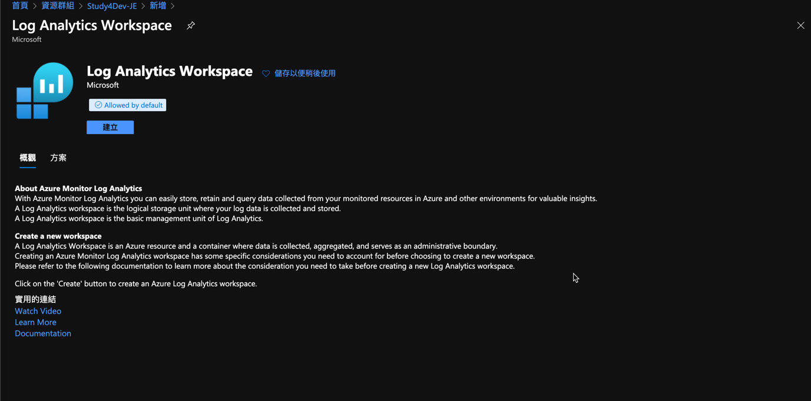
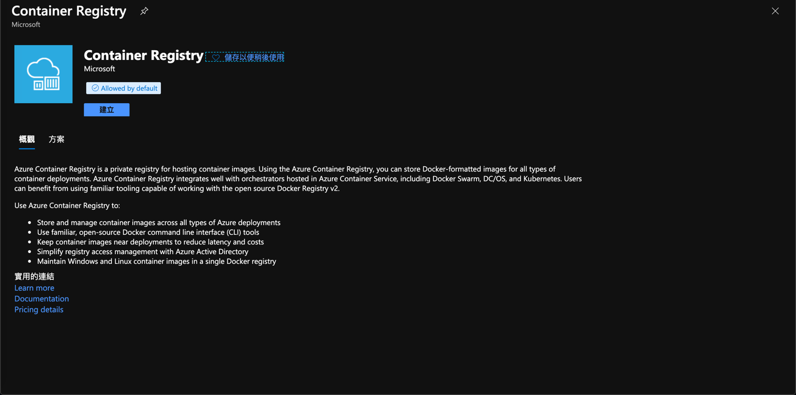
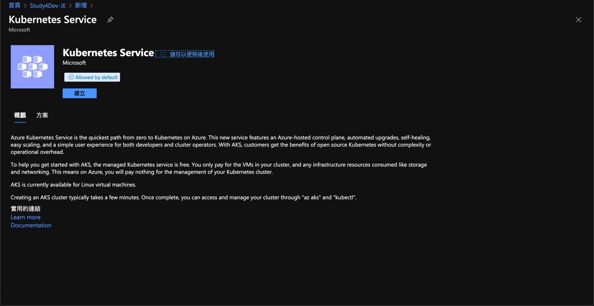
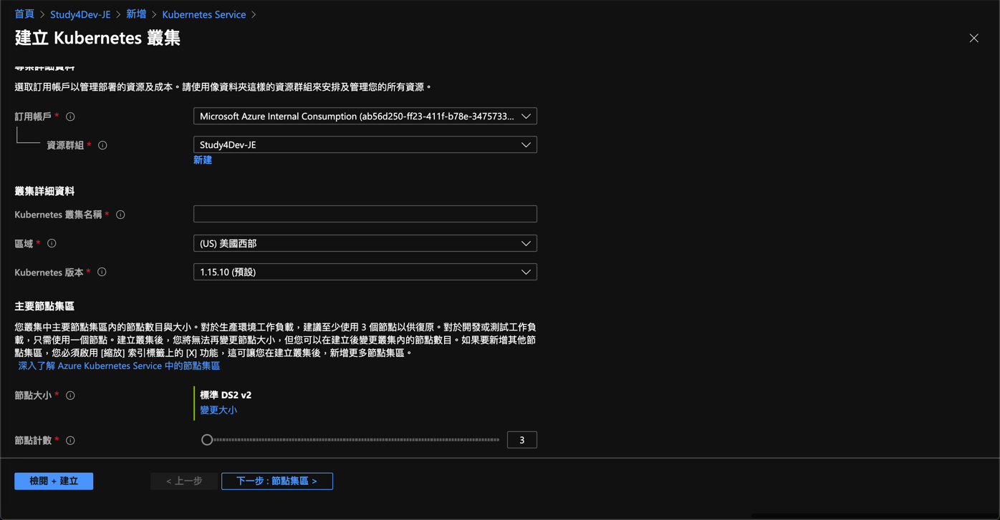
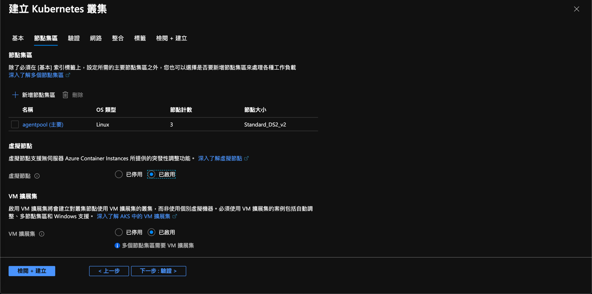
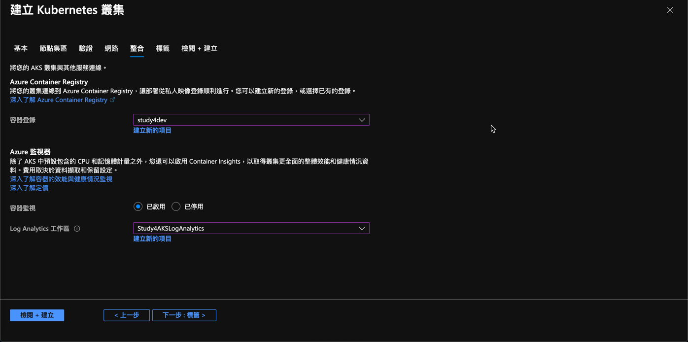

<!doctype html>


  


<html class="theme-next mist use-motion">
<head>
  <meta charset="UTF-8"/>
<meta http-equiv="X-UA-Compatible" content="IE=edge,chrome=1" />
<meta name="viewport" content="width=device-width, initial-scale=1, maximum-scale=1"/>


<meta http-equiv="Cache-Control" content="no-transform" />
<meta http-equiv="Cache-Control" content="no-siteapp" />


  <meta name="google-site-verification" content="iFYOZeAkjA9mpw80K_6C3Ybqm8zAmrJ3XXy5cSphRew" />


  
  
  <link href="/vendors/fancybox/source/jquery.fancybox.css?v=2.1.5" rel="stylesheet" type="text/css" />


  
  
  
  

  
    
    
  

  

  

  

  

  
    
    
    <link href="//fonts.googleapis.com/css?family=Lato:300,300italic,400,400italic,700,700italic&subset=latin,latin-ext" rel="stylesheet" type="text/css">
  


<link href="/vendors/font-awesome/css/font-awesome.min.css?v=4.4.0" rel="stylesheet" type="text/css" />

<link href="/css/main.css?v=5.0.1" rel="stylesheet" type="text/css" />


  <meta name="keywords" content="AKS,Azure,Linux,Container,Docker,Kubernetes,Log Analytics,ACR," />


  <link rel="shortcut icon" type="image/x-icon" href="/favicon.ico?v=5.0.1" />


<meta name="description" content="前言現在 Kubernetes 紅得幾乎如日中天，各家都推出自己的 Kubernetes 服務，而在 Microsoft 的 K8S，當然就叫做 Azure Kubernetes Service，而它的前身為 Azure Container Service。 而這篇文章，會敘述，如何建立 AKS。是的，你沒看錯，又要再寫一次怎麼建立 AKS。其實之前也寫過很多次，但是隨著時代的演進，又略有不同了">
<meta property="og:type" content="article">
<meta property="og:title" content="Azure - 建立 Azure Kubernetes Service">
<meta property="og:url" content="http://skychang.github.io/2020/03/21/Azure-Create_Azure_Kubernetes_Service/index.html">
<meta property="og:site_name" content="天空的垃圾場">
<meta property="og:description" content="前言現在 Kubernetes 紅得幾乎如日中天，各家都推出自己的 Kubernetes 服務，而在 Microsoft 的 K8S，當然就叫做 Azure Kubernetes Service，而它的前身為 Azure Container Service。 而這篇文章，會敘述，如何建立 AKS。是的，你沒看錯，又要再寫一次怎麼建立 AKS。其實之前也寫過很多次，但是隨著時代的演進，又略有不同了">
<meta property="og:locale" content="zh_TW">
<meta property="og:image" content="http://skychang.github.io/2020/03/21/Azure-Create_Azure_Kubernetes_Service/2020-05-27-16-55-07.png">
<meta property="og:image" content="http://skychang.github.io/2020/03/21/Azure-Create_Azure_Kubernetes_Service/2020-05-27-17-44-08.png">
<meta property="og:image" content="http://skychang.github.io/2020/03/21/Azure-Create_Azure_Kubernetes_Service/2020-05-27-17-36-00.png">
<meta property="og:image" content="http://skychang.github.io/2020/03/21/Azure-Create_Azure_Kubernetes_Service/2020-05-27-17-36-50.png">
<meta property="og:image" content="http://skychang.github.io/2020/03/21/Azure-Create_Azure_Kubernetes_Service/2020-05-27-17-38-23.png">
<meta property="og:image" content="http://skychang.github.io/2020/03/21/Azure-Create_Azure_Kubernetes_Service/2020-05-27-17-38-55.png">
<meta property="og:image" content="http://skychang.github.io/2020/03/21/Azure-Create_Azure_Kubernetes_Service/2020-05-27-17-40-30.png">
<meta property="og:image" content="http://skychang.github.io/2020/03/21/Azure-Create_Azure_Kubernetes_Service/2020-05-27-17-41-11.png">
<meta property="article:published_time" content="2020-03-21T23:58:00.000Z">
<meta property="article:modified_time" content="2020-05-27T12:09:38.872Z">
<meta property="article:author" content="Sky Chang">
<meta property="article:tag" content="AKS">
<meta property="article:tag" content="Azure">
<meta property="article:tag" content="Linux">
<meta property="article:tag" content="Container">
<meta property="article:tag" content="Docker">
<meta property="article:tag" content="Kubernetes">
<meta property="article:tag" content="Log Analytics">
<meta property="article:tag" content="ACR">
<meta name="twitter:card" content="summary">
<meta name="twitter:image" content="http://skychang.github.io/2020/03/21/Azure-Create_Azure_Kubernetes_Service/2020-05-27-16-55-07.png">


<script type="text/javascript" id="hexo.configuration">
  var NexT = window.NexT || {};
  var CONFIG = {
    scheme: 'Mist',
    sidebar: {"position":"left","display":"post"},
    fancybox: true,
    motion: true,
    duoshuo: {
      userId: 0,
      author: '博主'
    }
  };
</script>

  <title> Azure - 建立 Azure Kubernetes Service | 天空的垃圾場 </title>
<meta name="generator" content="Hexo 4.2.1"></head>

<body itemscope itemtype="http://schema.org/WebPage" lang="zh-tw">

  


<script>
  (function(i,s,o,g,r,a,m){i['GoogleAnalyticsObject']=r;i[r]=i[r]||function(){
            (i[r].q=i[r].q||[]).push(arguments)},i[r].l=1*new Date();a=s.createElement(o),
          m=s.getElementsByTagName(o)[0];a.async=1;a.src=g;m.parentNode.insertBefore(a,m)
  })(window,document,'script','//www.google-analytics.com/analytics.js','ga');
  ga('create', 'UA-29938905-2', 'auto');
  ga('send', 'pageview');
</script>


  
  
    
  

  <div class="container one-collumn sidebar-position-left page-post-detail ">
    <div class="headband"></div>

    <header id="header" class="header" itemscope itemtype="http://schema.org/WPHeader">
      <div class="header-inner"><div class="site-meta ">
  

  <div class="custom-logo-site-title">
    <a href="/"  class="brand" rel="start">
      <span class="logo-line-before"><i></i></span>
      <span class="site-title">天空的垃圾場</span>
      <span class="logo-line-after"><i></i></span>
    </a>
  </div>
  <p class="site-subtitle"></p>
</div>

<div class="site-nav-toggle">
  <button>
    <span class="btn-bar"></span>
    <span class="btn-bar"></span>
    <span class="btn-bar"></span>
  </button>
</div>

<nav class="site-nav">
  

  
    <ul id="menu" class="menu">
      
        
        <li class="menu-item menu-item-home">
          <a href="/" rel="section">
            
              <i class="menu-item-icon fa fa-fw fa-home"></i> <br />
            
            首頁
          </a>
        </li>
      
        
        <li class="menu-item menu-item-development">
          <a href="/development" rel="section">
            
              <i class="menu-item-icon fa fa-fw fa-question-circle"></i> <br />
            
            開發
          </a>
        </li>
      
        
        <li class="menu-item menu-item-alm">
          <a href="/alm" rel="section">
            
              <i class="menu-item-icon fa fa-fw fa-question-circle"></i> <br />
            
            維運
          </a>
        </li>
      
        
        <li class="menu-item menu-item-cloud">
          <a href="/cloud" rel="section">
            
              <i class="menu-item-icon fa fa-fw fa-question-circle"></i> <br />
            
            雲端
          </a>
        </li>
      
        
        <li class="menu-item menu-item-archives">
          <a href="/archives" rel="section">
            
              <i class="menu-item-icon fa fa-fw fa-archive"></i> <br />
            
            歸檔
          </a>
        </li>
      
        
        <li class="menu-item menu-item-tags">
          <a href="/tags" rel="section">
            
              <i class="menu-item-icon fa fa-fw fa-tags"></i> <br />
            
            標籤
          </a>
        </li>
      

      
    </ul>
  

  
</nav>

 </div>
    </header>

    <main id="main" class="main">
      <div class="main-inner">
        <div class="content-wrap">
          <div id="content" class="content">
            

  <div id="posts" class="posts-expand">
    

  
  

  
  
  

  <article class="post post-type-normal " itemscope itemtype="http://schema.org/Article">

    
      <header class="post-header">

        
        
          <h1 class="post-title" itemprop="name headline">
            
            
              
                Azure - 建立 Azure Kubernetes Service
              
            
          </h1>
        

        <div class="post-meta">
          <span class="post-time">
            <span class="post-meta-item-icon">
              <i class="fa fa-calendar-o"></i>
            </span>
            <span class="post-meta-item-text">發表於</span>
            <time itemprop="dateCreated" datetime="2020-03-21T23:58:00+00:00" content="2020-03-21">
              2020-03-21
            </time>
          </span>

          

          
            
              <span class="post-comments-count">
                &nbsp; | &nbsp;
                <a href="/2020/03/21/Azure-Create_Azure_Kubernetes_Service/#comments" itemprop="discussionUrl">
                  <span class="post-comments-count disqus-comment-count" data-disqus-identifier="2020/03/21/Azure-Create_Azure_Kubernetes_Service/" itemprop="commentsCount"></span>
                </a>
              </span>
            
          

          

          
          

          
        </div>
      </header>
    


    <div class="post-body" itemprop="articleBody">

      
      

      
        <h2 id="前言"><a href="#前言" class="headerlink" title="前言"></a>前言</h2><p>現在 Kubernetes 紅得幾乎如日中天，各家都推出自己的 Kubernetes 服務，而在 Microsoft 的 K8S，當然就叫做 Azure Kubernetes Service，而它的前身為 Azure Container Service。</p>
<p>而這篇文章，會敘述，如何建立 AKS。是的，你沒看錯，又要再寫一次怎麼建立 AKS。其實之前也寫過很多次，但是隨著時代的演進，又略有不同了 (泣)，所以這篇又會再重新敘述，如何建立 ASK….</p>
<h2 id="建立-Create-Log-Analytics-工作區"><a href="#建立-Create-Log-Analytics-工作區" class="headerlink" title="建立 Create Log Analytics 工作區"></a>建立 Create Log Analytics 工作區</h2><p>因為 AKS 會使用到 Log Analytics 來存放 Log 資訊，雖然你可以讓他自己建立，但放置的 Resource 位置都醜醜的，所以第一步，我們先來建立 Create Log Analytics 工作區。</p>
<p>找到 Log Analytics 工作區並建立，基本上，裡面也沒什麼可以選的…就順順的建立完成吧。<br></p>
<h2 id="建立-Azure-Container-Registry"><a href="#建立-Azure-Container-Registry" class="headerlink" title="建立 Azure Container Registry"></a>建立 Azure Container Registry</h2><p>通常 AKS 拉的 Images 會來自 ACR ( 你要放到 Docker Hub 也是可以啦 )，所以這邊會建議也先準備好 ACR，因為現在建立 AKS 的時候，可以直接選擇 ACR，讓他直接塞 Service Principal 進去，可以省掉自己加 Service Principal 的步驟。</p>
<p></p>
<p>這邊不會提到怎麼建 ACR，後續找時間再來補上 ACR 的部分。</p>
<h2 id="建立-AAD-Service-Principal"><a href="#建立-AAD-Service-Principal" class="headerlink" title="建立 AAD Service Principal"></a>建立 AAD Service Principal</h2><p>在以前，建立 AKS 的第一步，就是要建立 Service Pricnipal，因為 AKS ( Azure Kubernetes Service ) 會需要和其他 Azure 的服務互動，所以我們必須給他一個 AAD Service Principal，如果對於 Service Prinipal 不熟悉的，可以參考底下兩篇文章</p>
<ul>
<li><a href="https://docs.microsoft.com/zh-tw/azure/active-directory/develop/active-directory-application-objects" target="_blank" rel="noopener">關於 AAD Service Princiap 的解釋 : Azure Active Directory (Azure AD) 中的應用程式和服務主體物件</a></li>
<li><a href="https://docs.microsoft.com/zh-tw/azure/azure-resource-manager/resource-group-create-service-principal-portal" target="_blank" rel="noopener">使用入口網站來建立可存取資源的 Active Directory 應用程式和服務主體</a></li>
</ul>
<p>但這個時代，建立 AKS 的時候，你可以先不用建立了，而且，不是以前那種建立出來醜醜的 SP，而是現在有直接管理的機制 ( 刪除 AKS，Service Princiap 也會自動刪除喔! )</p>
<h2 id="建立-Azure-Kubernetes-Service"><a href="#建立-Azure-Kubernetes-Service" class="headerlink" title="建立 Azure Kubernetes Service"></a>建立 Azure Kubernetes Service</h2><p><code>若需要使用 Az cli 請參考本文最後面</code></p>
<p>在建立之前，有幾個地方要特別注意。</p>
<h3 id="Node-的-Pods-數"><a href="#Node-的-Pods-數" class="headerlink" title="Node 的 Pods 數"></a>Node 的 Pods 數</h3><p>預設每一個 Node 的最大 Pods 數為 110，若要調整為最大 Pods 數 ( 250 ) 需使用 AZ CLI 進行設定。</p>
<p>雖然正常情況下，一個 Node 的 Pods 數不太會高達超過 110，但如果真的有超過這個的規劃，那可能要使用 Azure Cli 進行建置。( 配置完後，<br>就不可變更 )</p>
<h3 id="AKS-IP-的規劃"><a href="#AKS-IP-的規劃" class="headerlink" title="AKS IP 的規劃"></a>AKS IP 的規劃</h3><p>AKS 預設使用的 IP 量是很大的，他有一個公式如下:</p>
<p>EX : 若有 50 個節點，其中也包含相應增加的 10 個節點的佈建：(50 + 10 + 1) + ( (50+10+1) * 30 (default)) = 1,891 (/21 或更大)</p>
<p>所以如果未來有需要有非常多的 Node，則要提前考慮與計算。</p>
<p>也請在開始前，將此網段切好，不然可能只能重新建 AKS 了</p>
<h3 id="AKS-VNode-IP-的規劃"><a href="#AKS-VNode-IP-的規劃" class="headerlink" title="AKS-VNode IP 的規劃"></a>AKS-VNode IP 的規劃</h3><p>除了使用 Node 外，AKS 支援使用 ACI ( Azure Contianer Instance ) 來進行存放實際的 Pods，通常 VNode 需要一個網段，而每一個 Pods 也會佔用掉一個 IP。</p>
<p>雖然這個功能，在建立完後再 enable / disable，但若有需要，開始前將此網段切好，會比較好。</p>
<h3 id="AKS-Node-大小的規劃"><a href="#AKS-Node-大小的規劃" class="headerlink" title="AKS Node 大小的規劃"></a>AKS Node 大小的規劃</h3><p>AKS 的 Node 規格建立後，就不可以變更了 ( 很重要，請唸三遍 )，所以到底要給大一點的 VM 當作 Node，還是小一點的 VM 當 Node，在一開始的時候，就決定了一切。</p>
<h3 id="AKS-的私人叢集"><a href="#AKS-的私人叢集" class="headerlink" title="AKS 的私人叢集"></a>AKS 的私人叢集</h3><p>建立 AKS 的時候，可以決定，是否只有內網 ( VNet 內 ) 才能對 AKS 進行控制 ( EX : 使用 Kubectl )，而這個也會在建立玩成後，無法變更。</p>
<p>但目前將 AKS 放到私人叢集可能會有以下 <a href="https://docs.microsoft.com/en-us/azure/aks/private-clusters" target="_blank" rel="noopener">issue</a></p>
<h3 id="網路原則"><a href="#網路原則" class="headerlink" title="網路原則"></a>網路原則</h3><p>目前 AKS 支援原生、Calico、Azure 三種網路原則，雖然小弟我一定是選 Azure，但如果有需要其他原則的考量，可能也要在部署前思考清楚。</p>
<h3 id="使用-Azure-Cli-來建立"><a href="#使用-Azure-Cli-來建立" class="headerlink" title="使用 Azure Cli 來建立"></a>使用 Azure Cli 來建立</h3><p>在 AKS 的官網，主要透過 Azure Cli 來建立，當然也可以透過 Portal 建立，這邊我們先提供一個快速的 Cli 指令。</p>
<h3 id="開始建立"><a href="#開始建立" class="headerlink" title="開始建立"></a>開始建立</h3><p>找到 Azure Kubernetes Service</p>
<p></p>
<p>進行基本的設定，這邊要注意的就是 VM 大小了，建完後，就不可以改了 ( 只能改數量 )</p>
<p></p>
<p>接著，這邊要決定是否要啟用虛擬節點，通常小弟我會在這邊就直接請用，後續也可以透過 AZ Cli 來啟用，其次，VM 擴展集也會在這邊勾起來，未來可以讓 Node 自動擴展。</p>
<p></p>
<p>這邊比較需要注意的，以前只有服務主體可以選擇，也就是說，以前選擇服務主體後，他會自動的幫忙建立一個 Service Principal，而現在，多了一個更方便的選項，就是系統指派的受控識別，選擇此功能，可以讓 AKS 服務自己來管理，也因此，不會多一個 Service Principal 了，甚至砍掉 AKS 的時候，以前會留下 Service Principal，使用受控識別，也不用自己處理了，砍掉的時候，會將受控識別一起砍掉。</p>
<p>RBAC 是一定要起用的，後面有太多的功能會和 RBAC 相依。</p>
<p></p>
<p>接下來是網路設定，通常配置如下就可以，提供 Node 使用的網段，VNode 使用的網段，還有 AKS 自己使用的網段，通常我都保持預設。</p>
<p>而需要注意的就是下面那三個，目前私人叢集還有一些問題，所以我目前還不敢打開 XDDD<br>而網路原則我習慣用 Azure，HTTP 應用程式路由通常是拿來測試使用，再比較正式的環境上，通常會搭配 Ingress 等服務，所以通常會將此功能關閉。</p>
<p></p>
<p>最後，現在可以和其他服務串再一起，也就是一開始設定 ACR 和 Log Analytics，這邊選定的 ACR，會直接在 ACR 裡面加上受控識別，來讓 AKS 未來可以撈取，當然不設定也可以，只是以後要自己加上去。</p>
<p></p>
<p>然後就完成了～</p>
<h2 id="建立-Azure-Kubernetes-Service-Az-Cli"><a href="#建立-Azure-Kubernetes-Service-Az-Cli" class="headerlink" title="建立 Azure Kubernetes Service - Az Cli"></a>建立 Azure Kubernetes Service - Az Cli</h2><p>如果想使用 AZ Cli 建立的，可以參考底下，目前底下的 AZ Cli 是需要建立 SP 的過程，若想讓他自己託管，可以將建立指令多加上，<a href="https://docs.microsoft.com/en-us/cli/azure/aks?view=azure-cli-latest#az-aks-create" target="_blank" rel="noopener">詳細可以參考</a></p>
<figure class="highlight plain"><table><tr><td class="gutter"><pre><span class="line">1</span><br></pre></td><td class="code"><pre><span class="line">--enable-managed-identity</span><br></pre></td></tr></table></figure>

<figure class="highlight bash"><table><tr><td class="gutter"><pre><span class="line">1</span><br><span class="line">2</span><br><span class="line">3</span><br><span class="line">4</span><br><span class="line">5</span><br><span class="line">6</span><br><span class="line">7</span><br><span class="line">8</span><br><span class="line">9</span><br><span class="line">10</span><br><span class="line">11</span><br><span class="line">12</span><br><span class="line">13</span><br><span class="line">14</span><br><span class="line">15</span><br><span class="line">16</span><br><span class="line">17</span><br><span class="line">18</span><br><span class="line">19</span><br><span class="line">20</span><br><span class="line">21</span><br><span class="line">22</span><br><span class="line">23</span><br><span class="line">24</span><br><span class="line">25</span><br><span class="line">26</span><br><span class="line">27</span><br><span class="line">28</span><br><span class="line">29</span><br><span class="line">30</span><br><span class="line">31</span><br><span class="line">32</span><br><span class="line">33</span><br><span class="line">34</span><br><span class="line">35</span><br><span class="line">36</span><br><span class="line">37</span><br><span class="line">38</span><br><span class="line">39</span><br><span class="line">40</span><br><span class="line">41</span><br></pre></td><td class="code"><pre><span class="line"><span class="comment"># 填寫自己的 Resource Group、AKS名稱、地區</span></span><br><span class="line">RESOURCE_GROUP_NAME=Study4-Group</span><br><span class="line">CLUSTER_NAME=Study4AKS</span><br><span class="line"></span><br><span class="line"><span class="comment"># Service Principal</span></span><br><span class="line">SP_ID=貼上應用程式(用戶端)識別碼</span><br><span class="line">SP_PASSWORD=貼上上面複製的密碼</span><br><span class="line"></span><br><span class="line"><span class="comment"># 取得virtual network resource ID</span></span><br><span class="line">VNET_ID=$(az network vnet show --resource-group <span class="variable">$RESOURCE_GROUP_NAME</span> --name Study4-VNet --query id -o tsv)</span><br><span class="line"></span><br><span class="line"><span class="comment"># 給 VNET SP權限</span></span><br><span class="line">az role assignment create --assignee <span class="variable">$SP_ID</span> --scope <span class="variable">$VNET_ID</span> --role Contributor</span><br><span class="line"></span><br><span class="line"><span class="comment"># 取得 virtual network subnet resource ID</span></span><br><span class="line">SUBNET_ID=$(az network vnet subnet show --resource-group <span class="variable">$RESOURCE_GROUP_NAME</span> --vnet-name Study4-VNet --name AKS-Node --query id -o tsv)</span><br><span class="line"></span><br><span class="line"><span class="comment"># 建立 AKS </span></span><br><span class="line">az aks create \</span><br><span class="line">    --resource-group <span class="variable">$RESOURCE_GROUP_NAME</span> \</span><br><span class="line">    --name <span class="variable">$CLUSTER_NAME</span> \</span><br><span class="line">    --node-count 3 \</span><br><span class="line">    --generate-ssh-keys \</span><br><span class="line">--network-plugin azure \</span><br><span class="line">    --service-cidr 10.10.0.0/16 \</span><br><span class="line">    --dns-service-ip 10.10.0.105 \</span><br><span class="line">    --docker-bridge-address 172.17.0.1/16 \</span><br><span class="line">    --vnet-subnet-id <span class="variable">$SUBNET_ID</span> \</span><br><span class="line">    --service-principal <span class="variable">$SP_ID</span> \</span><br><span class="line">    --client-secret <span class="variable">$SP_PASSWORD</span> \</span><br><span class="line">    --network-policy azure \</span><br><span class="line">--kubernetes-version 1.15.10</span><br><span class="line">--max-pods 250 \</span><br><span class="line">--node-vm-size Standard_D4s_v3</span><br><span class="line"></span><br><span class="line"><span class="comment">#啟動 VNode</span></span><br><span class="line">az aks <span class="built_in">enable</span>-addons \</span><br><span class="line">    --resource-group <span class="variable">$RESOURCE_GROUP_NAME</span> \</span><br><span class="line">    --name <span class="variable">$CLUSTER_NAME</span> \</span><br><span class="line">    --addons virtual-node \</span><br><span class="line">    --subnet-name AKS-VNode</span><br></pre></td></tr></table></figure>

<h2 id="參考資料"><a href="#參考資料" class="headerlink" title="參考資料"></a>參考資料</h2><ul>
<li><a href="https://docs.microsoft.com/zh-tw/azure/active-directory/develop/active-directory-application-objects" target="_blank" rel="noopener">https://docs.microsoft.com/zh-tw/azure/active-directory/develop/active-directory-application-objects</a></li>
<li><a href="https://docs.microsoft.com/zh-tw/azure/azure-resource-manager/resource-group-create-service-principal-portal" target="_blank" rel="noopener">https://docs.microsoft.com/zh-tw/azure/azure-resource-manager/resource-group-create-service-principal-portal</a></li>
<li><a href="https://docs.microsoft.com/en-us/cli/azure/aks?view=azure-cli-latest#az-aks-create" target="_blank" rel="noopener">https://docs.microsoft.com/en-us/cli/azure/aks?view=azure-cli-latest#az-aks-create</a></li>
<li><a href="https://docs.microsoft.com/zh-tw/azure/aks/use-managed-identity" target="_blank" rel="noopener">https://docs.microsoft.com/zh-tw/azure/aks/use-managed-identity</a></li>
<li><a href="https://docs.microsoft.com/en-us/azure/aks/private-clusters" target="_blank" rel="noopener">https://docs.microsoft.com/en-us/azure/aks/private-clusters</a></li>
</ul>

      
    </div>

    <div>
      
        
      
    </div>

    <div>
      
        

      
    </div>

    <footer class="post-footer">
      
        <div class="post-tags">
          
            <a href="/tags/AKS/" rel="tag">#AKS</a>
          
            <a href="/tags/Azure/" rel="tag">#Azure</a>
          
            <a href="/tags/Linux/" rel="tag">#Linux</a>
          
            <a href="/tags/Container/" rel="tag">#Container</a>
          
            <a href="/tags/Docker/" rel="tag">#Docker</a>
          
            <a href="/tags/Kubernetes/" rel="tag">#Kubernetes</a>
          
            <a href="/tags/Log-Analytics/" rel="tag">#Log Analytics</a>
          
            <a href="/tags/ACR/" rel="tag">#ACR</a>
          
        </div>
      

      
        <div class="post-nav">
          <div class="post-nav-next post-nav-item">
            
              <a href="/2020/03/13/Dapr-Hello_Dapr/" rel="next" title="Dapr - Hello Dapr">
                <i class="fa fa-chevron-left"></i> Dapr - Hello Dapr
              </a>
            
          </div>

          <div class="post-nav-prev post-nav-item">
            
          </div>
        </div>
      

      
      
    </footer>
  </article>


    <div class="post-spread">
      
    </div>
  </div>


          </div>
          


          
  <div class="comments" id="comments">
    
      <div id="disqus_thread">
        <noscript>
          Please enable JavaScript to view the
          <a href="//disqus.com/?ref_noscript" target="_blank" rel="noopener">comments powered by Disqus.</a>
        </noscript>
      </div>
    
  </div>


        </div>
        
          
  
  <div class="sidebar-toggle">
    <div class="sidebar-toggle-line-wrap">
      <span class="sidebar-toggle-line sidebar-toggle-line-first"></span>
      <span class="sidebar-toggle-line sidebar-toggle-line-middle"></span>
      <span class="sidebar-toggle-line sidebar-toggle-line-last"></span>
    </div>
  </div>

  <aside id="sidebar" class="sidebar">
    <div class="sidebar-inner">

      

      
        <ul class="sidebar-nav motion-element">
          <li class="sidebar-nav-toc sidebar-nav-active" data-target="post-toc-wrap" >
            文章目錄
          </li>
          <li class="sidebar-nav-overview" data-target="site-overview">
            本站概覽
          </li>
        </ul>
      

      <section class="site-overview sidebar-panel ">
        <div class="site-author motion-element" itemprop="author" itemscope itemtype="http://schema.org/Person">
          
          <p class="site-author-name" itemprop="name">Sky Chang</p>
          <p class="site-description motion-element" itemprop="description">雖然是垃圾場，但還是有許多好東西</p>
        </div>
        <nav class="site-state motion-element">
          <div class="site-state-item site-state-posts">
            <a href="/archives">
              <span class="site-state-item-count">354</span>
              <span class="site-state-item-name">文章</span>
            </a>
          </div>

          

          
            <div class="site-state-item site-state-tags">
              <a href="/tags">
                <span class="site-state-item-count">108</span>
                <span class="site-state-item-name">標籤</span>
              </a>
            </div>
          

        </nav>

        

        <div class="links-of-author motion-element">
          
        </div>

        
        

        
        

      </section>

      
        <section class="post-toc-wrap motion-element sidebar-panel sidebar-panel-active">
          <div class="post-toc">
            
              
            
            
              <div class="post-toc-content"><ol class="nav"><li class="nav-item nav-level-2"><a class="nav-link" href="#前言"><span class="nav-number">1.</span> <span class="nav-text">前言</span></a></li><li class="nav-item nav-level-2"><a class="nav-link" href="#建立-Create-Log-Analytics-工作區"><span class="nav-number">2.</span> <span class="nav-text">建立 Create Log Analytics 工作區</span></a></li><li class="nav-item nav-level-2"><a class="nav-link" href="#建立-Azure-Container-Registry"><span class="nav-number">3.</span> <span class="nav-text">建立 Azure Container Registry</span></a></li><li class="nav-item nav-level-2"><a class="nav-link" href="#建立-AAD-Service-Principal"><span class="nav-number">4.</span> <span class="nav-text">建立 AAD Service Principal</span></a></li><li class="nav-item nav-level-2"><a class="nav-link" href="#建立-Azure-Kubernetes-Service"><span class="nav-number">5.</span> <span class="nav-text">建立 Azure Kubernetes Service</span></a><ol class="nav-child"><li class="nav-item nav-level-3"><a class="nav-link" href="#Node-的-Pods-數"><span class="nav-number">5.1.</span> <span class="nav-text">Node 的 Pods 數</span></a></li><li class="nav-item nav-level-3"><a class="nav-link" href="#AKS-IP-的規劃"><span class="nav-number">5.2.</span> <span class="nav-text">AKS IP 的規劃</span></a></li><li class="nav-item nav-level-3"><a class="nav-link" href="#AKS-VNode-IP-的規劃"><span class="nav-number">5.3.</span> <span class="nav-text">AKS-VNode IP 的規劃</span></a></li><li class="nav-item nav-level-3"><a class="nav-link" href="#AKS-Node-大小的規劃"><span class="nav-number">5.4.</span> <span class="nav-text">AKS Node 大小的規劃</span></a></li><li class="nav-item nav-level-3"><a class="nav-link" href="#AKS-的私人叢集"><span class="nav-number">5.5.</span> <span class="nav-text">AKS 的私人叢集</span></a></li><li class="nav-item nav-level-3"><a class="nav-link" href="#網路原則"><span class="nav-number">5.6.</span> <span class="nav-text">網路原則</span></a></li><li class="nav-item nav-level-3"><a class="nav-link" href="#使用-Azure-Cli-來建立"><span class="nav-number">5.7.</span> <span class="nav-text">使用 Azure Cli 來建立</span></a></li><li class="nav-item nav-level-3"><a class="nav-link" href="#開始建立"><span class="nav-number">5.8.</span> <span class="nav-text">開始建立</span></a></li></ol></li><li class="nav-item nav-level-2"><a class="nav-link" href="#建立-Azure-Kubernetes-Service-Az-Cli"><span class="nav-number">6.</span> <span class="nav-text">建立 Azure Kubernetes Service - Az Cli</span></a></li><li class="nav-item nav-level-2"><a class="nav-link" href="#參考資料"><span class="nav-number">7.</span> <span class="nav-text">參考資料</span></a></li></ol></div>
            
          </div>
        </section>
      

    </div>
  </aside>


        
      </div>
    </main>

    <footer id="footer" class="footer">
      <div class="footer-inner">
        <div class="copyright" >
  
  &copy; 
  <span itemprop="copyrightYear">2020</span>
  <span class="with-love">
    <i class="fa fa-heart"></i>
  </span>
  <span class="author" itemprop="copyrightHolder">Sky Chang</span>
</div>

<div class="powered-by">
  由 <a class="theme-link" href="http://hexo.io" target="_blank" rel="noopener">Hexo</a> 強力驅動
</div>

<div class="theme-info">
  主題 -
  <a class="theme-link" href="https://github.com/iissnan/hexo-theme-next" target="_blank" rel="noopener">
    NexT.Mist
  </a>
</div>

        

        
      </div>
    </footer>

    <div class="back-to-top">
      <i class="fa fa-arrow-up"></i>
    </div>
  </div>

  

<script type="text/javascript">
  if (Object.prototype.toString.call(window.Promise) !== '[object Function]') {
    window.Promise = null;
  }
</script>


  


  
  <script type="text/javascript" src="/vendors/jquery/index.js?v=2.1.3"></script>

  
  <script type="text/javascript" src="/vendors/fastclick/lib/fastclick.min.js?v=1.0.6"></script>

  
  <script type="text/javascript" src="/vendors/jquery_lazyload/jquery.lazyload.js?v=1.9.7"></script>

  
  <script type="text/javascript" src="/vendors/velocity/velocity.min.js?v=1.2.1"></script>

  
  <script type="text/javascript" src="/vendors/velocity/velocity.ui.min.js?v=1.2.1"></script>

  
  <script type="text/javascript" src="/vendors/fancybox/source/jquery.fancybox.pack.js?v=2.1.5"></script>


  


  <script type="text/javascript" src="/js/src/utils.js?v=5.0.1"></script>

  <script type="text/javascript" src="/js/src/motion.js?v=5.0.1"></script>


  
  

  
  <script type="text/javascript" src="/js/src/scrollspy.js?v=5.0.1"></script>
<script type="text/javascript" src="/js/src/post-details.js?v=5.0.1"></script>


  


  <script type="text/javascript" src="/js/src/bootstrap.js?v=5.0.1"></script>


  


  

    <script type="text/javascript">
      var disqus_shortname = 'skychang';
      var disqus_identifier = '2020/03/21/Azure-Create_Azure_Kubernetes_Service/';
      var disqus_title = 'Azure - 建立 Azure Kubernetes Service';
      var disqus_url = 'http://skychang.github.io/2020/03/21/Azure-Create_Azure_Kubernetes_Service/';

      function run_disqus_script(disqus_script){
        var dsq = document.createElement('script');
        dsq.type = 'text/javascript';
        dsq.async = true;
        dsq.src = '//' + disqus_shortname + '.disqus.com/' + disqus_script;
        (document.getElementsByTagName('head')[0] || document.getElementsByTagName('body')[0]).appendChild(dsq);
      }

      run_disqus_script('count.js');
      
        run_disqus_script('embed.js');
      
    </script>
  


  
  
  

  

  

</body>
</html>
